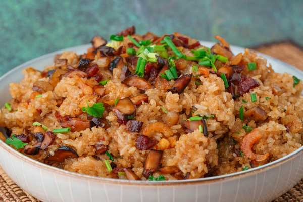

Lo Mai Fan

Lo Mai Fan or Chinese sticky rice is basically sticky rice steam with chineses sausage, drive shrimp, and drid mushrooms. This dish simple but delicious. This is amazing
amazing to warm you up on a chilly winter day, or autumn evening, or spring brunch, or in the middle of a summer night peering into the fridge looking for the best leftovers.
The ingredients needs are shelf-stable, so you can just make it whenever you want
Ingredients
Main Ingredients
- 28.3g Chinese sausage
- 56.7g cured pork belly
- 28.3g dried shittake mushroom
- 28.3g dried shrimp
- 56.7g green onion(5-10 stalks)
- 56.7g cilantro(same amount as green onion)
- 113g jasmin rice
- 567g glutinous rice
- 2 cloves garlic
- 624g boiling water
- 3 tbsp ol
Seasoning: Rice
- 1 tsp dark soy sauce
- 1 tsp salt
Seasoning:Stir-fry
- 1 tsp light soy sauce
- 1 tsp dark soy sauce
Steps
-
Because glutinous rice alone is very soft and squishy, we mix in some jasmine rice for structure, which keeps our final dish from getting overly soft.
Measure out jasmine rice (113 g) and glutinous rice (567 g), and wash 3 times, pouring out the starchy water and using fresh water. Let the rinsed rice drain in a colander.
The rice will also absorb the remaining surface wetness and become easier to cook through.
-
Wash the dried shrimp (28.3 g) in clean water, and drain. Then, soak the dried shrimp in warm water, which will help them soften up faster than if they were to soak in cold water.
Similarly, wash the dried shiitake mushrooms (28.3 g), drain, and then soak in warm water to rehydrate and soften.
Daddy Lau likes to cover the soaking bowl with a plate like a lid, so the heat doesn't escape as quickly and the mushrooms soften even faster.
After 10-15 minutes, they should be soft and ready to cut. Cut them into thin slices, and then dice into small pieces.
- Cured pork belly is very dense, so it's hard to cut through, even with a sharp or heavy knife. Be careful! Make sure that your non-cutting hand is grasping the meat with a claw-like grip, with fingertips tucked under so they don't get bit by a slipping knife.
Cut the cured pork belly (56.7 g) into strips, and then dice into small pieces. Make the pieces a similar size and shape to the diced mushrooms.
Chop the Chinese sausage (28.3 g) the same way: cut into strips, then diced into small pieces.
- Peel garlic (2 cloves). Then, smash and mince them finely.
The cilantro and green onions are for garnish, so use a clean knife and cutting board, or give your knife and cutting board a quick hot rinse.
Chop the cilantro (56.7 g) and green onion (56.7 g) into small pieces. The cilantro stems and paler part of green onions are more pungent, so make sure those are chopped finely.
-
We use a rice cooker, but if you're used to cooking rice another method, that's fine too!
Add boiling water (624 g) to the rice cooker, or whichever cooking vessel you prefer. Using boiling water instead of cold water like we usually do, will cook the rice faster, resulting in a chewier texture with more of a bite, rather than mush.
Add salt (4.9 mL) and dark soy sauce (4.9 mL) to the water and mix them in. Adding the dark soy sauce now will help the rice cook into a beautifully uniform yellow color.
Then, stir in the rinsed rice, and start cooking (whether it's pushing the on button or turning on the stove).
-
When the rice is done cooking, it's time to start stir-frying everything together!
Heat your wok or pan on high. When it's hot, or after about 30 seconds, add oil (14.8 mL), and give it a swirl to coat.
When the oil ripples, or after 40-50 seconds, add garlic. Stir-fry the garlic for 10 seconds, then add the dried shrimp. Starting with the garlic and dried shrimp will really release their aromas and flavor the oil.
Stir-fry for another 10 seconds, then add both the Chinese sausage and the cured pork belly.
Cook for about 30 seconds so that the meats also get aromatic. Add the mushrooms and cook for another minute.
Add light soy sauce (4.9 mL) and dark soy sauce (4.9 mL). Cook for another 40-50 seconds, and then scoop everything out and onto a plate.
-
Stir the rice with chopsticks to make sure that the seasoning from earlier is well-mixed. Add oil (14.8 mL) to the rice and stir it in.
Add more oil (14.8 mL) to the wok, and then once it's hot, add the rice. Stir-fry until the rice smells very fragrant, or for about 1.5 minutes. Keep moving the rice as it cooks, so it fries evenly.
Give it a taste to see if the flavor needs adjustment. My dad added another tbsp of light soy sauce to his. Cook for another 30 seconds.
Lower the heat and add the stir-fried ingredients from earlier, but reserve a tbsp or 2 to sprinkle on top for beautiful presentation. Use chopsticks to loosen up the rice and mix the ingredients in. The juices from the stir-fried ingredients will moisten the rice and make it easier to mix the small pieces in.
Stir-fry and mix everything for 2.5 minutes, then add the chopped cilantro and green onion. (Again, you can save some for garnish.) Mix everything in and turn off the heat. The chopped cilantro and green onion don't need to be cooked!
-
Scoop the sticky rice, now speckled throughout with little flavor gems of meat and mushrooms, into the serving dish. If you reserved those stir-fried ingredients and green garnishes, layer on the stir-fried ingredients first, and then sprinkle the green garnishes on top. Enjoy!